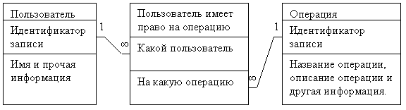
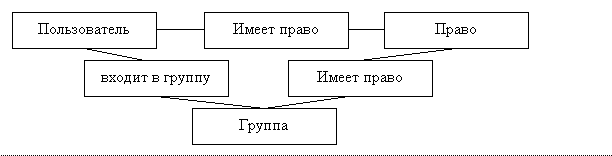
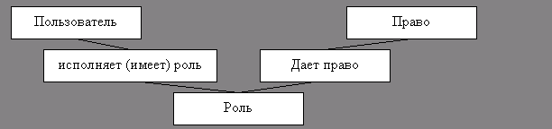
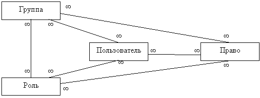
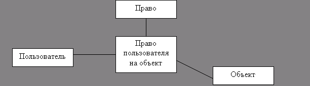

Доступ в программах
Сергей Радкевич (mailto:level3@mail.ru, ICQ:15320127)
В данной работе рассматриваются способы хранения информации о правах доступа к различным частям программ и данных. Работа может быть интересна программистам, реализующим многопользовательские системы.
Термины
При создании приложения, которое используют несколько пользователей, возникает задача ограничения доступа. Существует несколько способов решения этой задачи. Выбор оптимального способа зависит от дополнительных условий и особенностей приложения.
Самый простой способ ограничения доступа – когда есть список пользователей, которым разрешено работать со всей программой целиком. Для его реализации потребуется одна таблица с полем «пользователь». Проверке на входе в программу – единственная проверка.
В более сложном случае нужно разграничивать доступ к отдельным частям (функциям) программы и проверок становиться много, а не одна. Поэтому есть понятия:
· пользователь;
· программа;
· функция программы
часть программы, позволяющая пользователю выполнить некоторое осмысленное и нужное действие.
· право;
пользователю может быть дано или не дано право использовать некоторую функцию программы.
· роль (набор прав);
· группа пользователей.
1. Пользователи, права, роли и группы
Роли и группы могут быть использованы как дополняющие друг друга (ортогональные) концепции. Поэтому есть четыре варианта их применения: не использовать ни одну из них, использовать по только группировку пользователей, использовать только группировку прав, использовать группировку пользователей и прав одновременно.
1.1. Набор прав
В этом случае некоторому пользователю дается (или не дается) право выполнять некоторую операцию. Так как операции и пользователи связаны отношением «многие – ко - многим» здесь потребуются уже три таблицы: «пользователи», «операции», «пользователь имеет право на операцию».

1.2. Группы пользователей
В случае если программой пользуется большое количество пользователей, то назначать права каждому пользователю становится неудобно. Тогда вводят понятие «группа пользователей». Сначала пользователей объединяют в группы (например, на территориальной основе, по возрастному признаку, совершеннолетние – несовершеннолетние), а затем определяют права для групп. При этом при добавлении нового пользователя в систему вместо назначения ему прав достаточно просто добавить пользователя в нужную группу. Пользователи и группы в общем случае связаны соотношением «многие – ко – многим». При этом иногда возникает потребность запретить какое-то право отдельному пользователю группы. Кроме того, права могут назначаться как группам, так и отдельным пользователям.
Для этого потребуется следующая структура:

1.3. Ролевая модель
Если у программы много функций, которые удобно логически сгруппировать, то вводят понятие «роль» - набор функций, необходимых для выполнения некоторой работы. Так, например, для программы автоматизации школы такими ролями могут быть «ученик», «учитель», «родитель», «завуч». Пользователь может иметь несколько ролей, например, быть одновременно учителем и родителем. Т.е. пользователи и роли связаны отношением “многие – ко – многим”, так же как и пользователи и группы в схеме с группами пользователей. В обеих схемах можно не давать возможности назначать индивидуальным пользователям индивидуальные права. В этом случае потребуется такая схема:

1.4. Модель с ролями и группами
Чтобы обеспечить максимальную гибкость для ограничения доступа ролевую модель и группы пользователей объединяют в общую модель. В этом случае роли могут назначаться группам, что еще уменьшает объем администрирования.
В итоге получается тетраэдр, в вершинах которого находятся пользователи, группы, роли и права, а на ребрах – таблицы для моделирования отношения «многие – ко – многим»

1.5. Оптимизация
1.5.1. Маски прав
Если прав фиксированное количество, то можно завести в таблицах «пользователь-право», «группа-право» и «роль-право» дополнительные поля, например по одному полю на каждое право. Тогда таблицу «право» можно сделать подразумеваемой. Если прав меньше 32, то можно все дополнительные поля объединить в одно и назвать это «маской прав».
1.5.2. Эффективные права
Кроме того, можно вычислить эффективные права и добавить поле в таблицу «пользователь-право». Это потребует обновления этого поля при каждом изменении других таблиц, однако существенно ускорит проверку прав.
2. Объекты
Права в программе могут разграничиваться не только по функциям, но и по объектам. К примеру, один и тот же пользователь может иметь право «только чтение» для одной папки и «полный доступ» для другой папки.
2.1. Права на объекты
В этом случае права должны даваться не вообще, а на конкретные объекты. Однако так как на разные объекты могут даваться одинаковые права, то можно воспользоваться следующей структурой:

Т.е. дополнить таблицу «пользователь – право» колонкой, в которой будет указано, к какому объекту это право дано. Точно так же должны быть расширены таблицы: роль–право, группа–право и группа–роль. Таким образом, разграничивая доступ к объектам, мы добавляем новое измерение к модели.
Если же позволить назначать права не только на объекты, но и на группы объектов (т. к. назначать права на каждый объект в отдельности трудоемко), то получаем шесть сущностей (пользователь, группа, право, роль, объект, группа), которые объединяются восемью тройными связями. Восемью, так как у нас три пары сущностей, а 2^3 = 8. Еще есть три двойные связи (право-роль, пользователь-группа и объект-группа).
Это подводит к мысли – нельзя ли обойтись общей таблицей «право на»?
2.2. Иерархии объектов
Объектов, как правило, очень много, существенно больше, чем пользователей и прав. Поэтому объекты не только объединяют в группы, но и организовывают в иерархии (вероятно, появятся системы, в которых группы и роли так же образуют иерархии). Иерархию можно изобразить в виде дерева. При этом права могут назначаться непосредственно листу или узлу, либо могут браться права узла более близкого к корню. Это называется наследованием прав.
В случае наследования прав возникает вопрос – что делать, если установлен флаг «права наследуются» и права определены непосредственно для самого объекта. Одно из решений – объединять такие права (как на допуск, так и на недопуск), другое – не позволять определять права для объекта, если установлен флаг «права наследуются».
В случае если берутся либо права предка, либо права объекта, можно завести у объекта поле – откуда брать права. Это поле является кешем и должно обновляться при изменении поля «права наследуются» у объекта и у его предков.
Заключение
В данной работе рассмотрены различные схемы хранения информации о правах доступа. Для конкретной системы нужно строить свою схему исходя из требований по быстродействию и уровню ограничения доступа.
Сергей Радкевич (mailto:level3@mail.ru, ICQ:15320127)
Взято из http://delphi.chertenok.ru